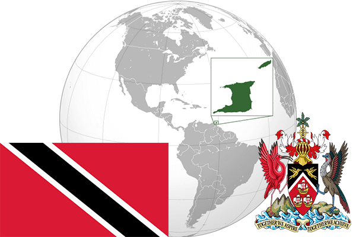

To`liq nomi: Trinidad va Tobago Respublikasi
Region: Karib dengizi
Qonunchilik shakli: Respublika
Mustaqillik kuni: 31 avgust 1962-yil
Poytaxt: Port-of-Speyn
Maydoni: 5,128 km²
Chegaradosh davlatlari: Yo’q
Aholisi: 1 328 019 (2011-yil)
Aholi zichligi: 254,4 /км²
Aholining o`rtacha yoshi: 70,58 yil
Rasmiy tili: Ingliz tili
Dini: -
Pul birligi: Trinidad va Tobago dollari
Telefon prefiksi: +1-868
Internet domen: .tt
Xalqaro tashkilotlarga a`zoligi: BMT
Dengiz va okeanlarga chiqishi: Karib dengizi
YIM: Butun: $21.7 mlrd (2017-yil)
Yirik shaharlari: Port-of-Speyn